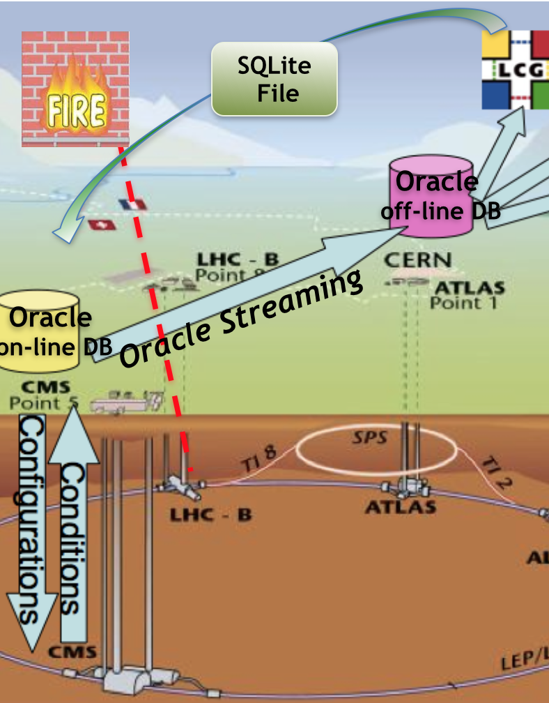
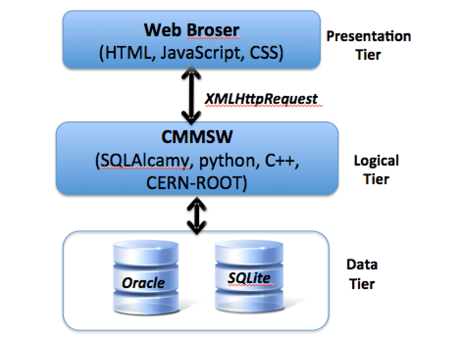

Created by Antonio Pierro / @antonio_pierro_
| Title | Subject | Knowledge |
|---|---|---|
| 2012-2013 Physics and Computer Science professor |
I held a position as a Teaching Professor of Physics I and Teaching Professor of Computer Science at Università degli Studi di Cagliari. | Physics I and Computer Science |
| 2008-2011 PhD in Physics |
Tools for Handling and Monitoring the Condition Data for the CMS Experiment | CMSSW, C++, python, Oracle, data production chains HEP experiments |
| 2006-2007 EGEE-contract |
Accounting and Operational tasks in Grid Computing | to deal with end-users and deployment teams at LCG sites |
| 2002-2005 INFN fellowship in Information Technology |
Application development for Grid Computing environments | Computing model of HEP, Grid middleware Linux OS, PHP, PostgreSQL |
| 1996-2001Master degree in Physics (110/110 cum laude) | "Sistema per la risoluzione interattiva dei problemi di meccanica" ("Interactive solution of classical physics problems using a web application") | Scripting languages, Java, SQL, MySQL |


| Sharing knowledge |
|
| Open to new ideas | Passionate and enthusiastic to discover novel efficient technologies implemented also by large company (Google, Amazon, HTML5, cloud computing, NoSQL….) |
| Team player | I am interested in other people's ideas, not just my own. I also love to pass on my knowledge and I think it allows me to collaborate and generate ideas. |
| Result-oriented | Rapid delivery of useful software, face-to-face conversation. |